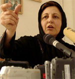

پذيرش > سایت نوشته ها > شيوه جديدي از بي قانوني در حال گسترش است


 شيوه جديدي از بي قانوني در حال گسترش است شيوه جديدي از بي قانوني در حال گسترش است
21 اردیبهشت 1386 - شیرین عبادی در گفتگو با روز - نسخه قابل چاپ
سپیده عبدی
شيرين عبادي هفته پيش بيست و يکمين دکتراي افتخاري خود از دانشگاه شيکاگو دريافت کرد. وي پس از آن به ارائه يک سخنراني در دانشگاه شيکاگو با موضوع حقوق بشر پرداخت که از سوي دانشجويان و اساتيد با استقبال فراواني مواجه شد. با عبادي در زمينه فشارهاي اخير بر فعالان جنبش زنان در ايران مصاحبه کرده ايم که در پی مي آيد.
مي دانيد که مدتي است برخورد با فعالان کمپين يک ميليون امضا ابعاد گسترده تري پيدا کرده و در همين راستا، اخيرا زينب پيغمبر زاده از فعالان جوان اين کمپين راهي زندان شده است. اين برخوردها را به لحاظ حقوقي چگونه تفسير مي کنيد؟
در زمينه دستگيرهاي اخير داوطلبان جمع آوري يک ميليون امضا، بايد بگويم که اصرار عجيبي براي نقض قوانين در مورد اين فعالان به چشم مي خورد و در واقع، شيوه جديدي از بي قانوني در ايران در حال گسترش است. داوطلبين جمع آوري امضا، به کرات به وسيله تلفن به مراجع قضايي احضار شده اند. من هميشه تاکيد داشته ام که چنين شيوه اي صد در صد غير قانوني است و احضار به وسيله تلفن به دادرسي در هيچ ماده اي قانون پيش بيني نشده است. اما عجيب است که به نظر مي رسد از قضا، دادگاه ها اصرار مشخص دارند که احضار متهمان را دقيقا به همين شيوه – غيرقانوني – انجام دهند...
شيوه اي که در مورد خانم پيغمبرزاده هم اعمال شده است...
بله. خانم پيغمبرزاده به وسيله تلفن احضار شدند و ايشان گفتند که حاضر نيستند که به وسيله احضاريه غير قانوني و شفاهي به دادگاه مراجعه کنند. بعد از مدتي احضاريه کتبي به محل سکونت ايشان ارسال شد و در اجراي قانون خانم پيغمبرزاده به شعبه بازپرسي مراجعه کردند. طبق اظهارات وکلا و بستگان زينب، قاضي به محض ديدن ايشان مي گويد حالا به با اخطار شفاهي و تلفني نيامدي، قرار قرار کفالت تو را تبديل به وثيقه 20 ميليون توماني مي کنم! جالب اين است که با وجودي که همان روز و روز بعد آن، وکيل و پدر ايشان براي توديه وثيقه به دادگاه انقلاب مراجعه کرده اند، حتي اجازه نمي دهند که آنها وارد دادگاه شوند.
يعني به نوعي ايشان را به خاطر تاکيد بر اجراي قانون مجازات کرده اند؟
دقيقا مجازات کرده اند. اصرار مشخص بر اجراي اين شيوه غير قانوني - آن هم از سوي دستگاهي که بايد متولي اصلي اجراي قانون باشد - معنايي جز عدم احترام مسوولان قضايي به قوانين ندارد.
به عقيده شما قضات چه اصراري دارند که یه اين شيوه غيرقانوني عمل بکنند؟
البته، دليل کلي ايجاد فشار بيشتر بر فعالان زن است. اما نکته ظريف ديگري هم در اين ميان وجود دارد: اگر مجامع حقوق بشري و محافل بين المللي پرونده متهماني چون زينب پيغمبرزاده را مورد رسيدگي قرار بدهند، در آن صورت قوه قضاييه طبق محتويات پرونده اي که به مراجع بين المللي ارائه خواهد داد، اعلام مي کند که با تسامح با متهم رفتار کرده است. يعني مي گويد که اول يک قرار بسيار ضعيف صادر کرده و اينها خودشان تعلل کرده اند و وثيقه را نياورده اند و به خاطر همين هم متهم زنداني شده است. در حالي که حقيقت مطلب اين نيست. اگر از اينکه قرار صادر شود، اصلاً افراد را به دادگاه راه ندهند که اين قرار را توديع بکنند، درست مانند آن است که از ابتدا به متهم حکم زندان داده باشند.
چه موارد ديگري از نقض قانون در برخورد با فعالان جنبش زنان را قابل ذکر مي دانيد؟
موارد، متعدد است. اما يک نمونه شاخص ديگر که لازم است يادآوري کنم، آن است که اتهام خانم پيغمبرزاده و ساير زناني که براي برابري حقوق در ايران فعاليت مي کنند و عضو داوطلبين کمپين يک ميليون امضا هستند، در کيفرخواست "اقدام عليه امنيت ملي" ذکر شده - که البته همين اتهام نيز به لحاظ حقوقي قابل فهم نيست: چگونه کساني که از مجلس و ساير نهادهاي رسمي کشور خود مي خواهند قوانيني را اصلاح کنند، در زير مجموعه "براندازي" جاي مي گيرند؟ اما به هر ترتيب، دستکير شدگان، به اتهامات امنيتي دستگير شده اند. اين در حالي است که مقامات قضايي با همکاري سازمان زندان ها، براي اذيت بيشتر اين زنان، آنها را به بندهايي مي فرستند که مجرمين عادي در آنجا هستند و وضعيت و رفتار و اتهامات آنها با اين زنان تفاوت بسيار دارد، و اين مساله باعث آزار روحي شديد فعالان زن مي شود. به کلام ساده بايد بگويم قوه قضايي از تمام راه هاي ممکن استفاده مي کند که با ناديده گرفتن قوانين در مورد اين زنان ناديده بگيرد، آنا را تحت فشار بگذارد، بلکه با اين شيوه بقيه زنان را از مطالبه حقوق حقه قانوني خود منصرف کند. اين شيوه عملکرد دادگستري نشان از آن دارد که چگونه بنا به عبارت معروف: "وقتي سياست از در دادگاه وارد مي شود، عدالت از پنجره فرار مي کند."
آيا به عقيده شما اين برخوردهاي فراقانوني در دستگاه قضايي، دلايل سياسي دارد يا صرفا نوعي بي نظمي است؟
ببينيد، رئيس محترم قوه قضايي ماه گذشته فرمودند: مهمترين اولويت قوه قضاييه همکاري و تعاون با دولت است. مهمترين وظيفه قوه قضاييه اجراي عدالت و اجراي قوانين است، نه آنچه که قوه مجريه جيزي را بگويد و قوه قضاييه توجيه قانوني براي آن پيدا کند. وقتي مهمترين وظيفه قوه قضاييه همکاري و تعاون با قوه مجريه باشد، يعني اين که سياست از در دادگاه وارد شده است. به هر حال، ما اميدواريم روزي عملکرد خلاف قانون مأمورين قضايي مورد رسيدگي قرار بگيرد و به اين شيوه ها پايان داده شود.
ارسال به
بالاترین
،
توییتر
،
فریندفید
،
فیسبوک
در همين بخش :
 یک خبر تلخ؟ یک قانونشکنی؟ یک تصمیم بخشنامهای جدید؟ یک خبر تلخ؟ یک قانونشکنی؟ یک تصمیم بخشنامهای جدید؟
چرا بایست به سکسوالیته پرداخت؟ / نفیسه آزاد
آزارجنسی خانگی؛ «قربانی» نه، «نجات یافته»
زنان، بزرگترین بازندگان بهار عرب
سانسور از دیدگاه جنسیتی/الهه امانی
ديگر بخش ها :
طرح یک میلیون امضا
|
مقالات
|
سایت نوشته ها
|
اخبار
|
گزارش كمپين
|
گفت و گو
|
علیه سکوت
|
كوچه به كوچه
|
نامه های شما
|
گزارش ویژه
|
گفتگو با اعضا
|
ویژه سالگرد کمپین
|
تصویر برابری
|
دل آرام علی
|
تریبون
|
مقالات
|
تاریخ شفاهی
|
خارج از چارچوب
|
کتابخانه
|
درباره کمپین
|
کمپین در شهرها
|
کمپین در بند
|
صدای تغییر
|
ویژه 22 خرداد
|
لایحه حمایت از خانواده
|
گالری
|
عشا مومنی
|
امیر یعقوبعلی
|
خدیجه مقدم
|
راحله عسگری زاده و نسیم خسروی
|
پروین اردلان،جلوه جواهری، مریم حسین خواه، ناهید کشاورز
|
زینب پیغمبرزاده
|
سعیده امین، سارا ایمانیان، محبوبه حسین زاده، ناهید کشاورز و همایون نامی
|
احترام شادفر
|
نسیم سرابندی زاده،فاطمه دهدشتی
|
وبلاگ مهمان
|
پرونده خرم آباد
|
دستگیری ها
|
مریم مالک
|
پرستو اللهیاری
|
مهرنوش اعتمادی
|
سمیه رشیدی
|
Other Languages
|
همراهان
|
«فراخوان کمپین ده روز با بهاره هدایت»
| English
|